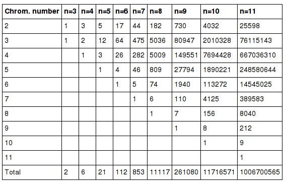
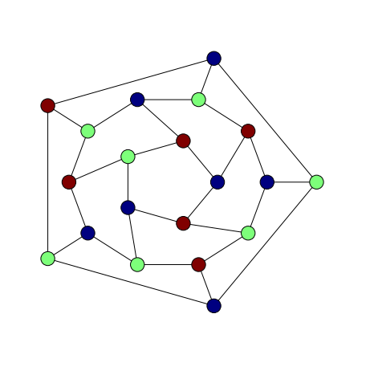
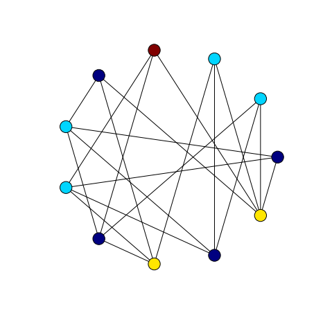

The previous two posts were about greedy colouring small graphs. In the first post an implementation of the greedy algorithm in Python with NetworkX was used to colour all graphs on at most 7 vertices. We compared different vertex orderings by counting, for different ordering strategies, the total number of colours used on this set of graphs. In the subsequent post we repeated this experiment and extended it to graphs on at most 8 vertices using Culberson’s colouring programs.
Perhaps surprisingly, Culberson’s programs did much better than our Python implementation. The most likely explanation is simply that our greedy colouring Python code is broken. Before we can conclude this, though, it is probably a good idea to investigate colouring the same set of graphs using another vertex colouring algorithm.
The goal of this post then is to introduce a slightly different approach to graph colouring, the method of recursive independent set removal.
Chromatic Numbers of Small Graphs
The minimal total number of colours used in a proper colouring of all graphs on at most seven vertices is 3348, computed from the following table which is found on Gordon Royle’s Small Graphs data page.

The total number of colours used by Culberson’s greedy program with descending degree vertex ordering was 3616. The total number of colours used by the NetworkX-based implementation was 4120.
These values differ by 504, which seems quite a large discrepancy as a proportion of the minimum of 3348 colours. What could be the cause? Or is this not a significant discrepancy? It seems to me that there are a few possibilities. The most likely explanations are problems with the data sets used in the experiments or a flaw in our implementation of the greedy algorithm. These possibilities should be eliminated first before embarking on a larger study to decide whether the discrepancy is significant or not.
Whatever are the reasons for the discrepancy it seems that some testing and verification of both graph data and colourings is in order. Seeing as we have been avoiding this issue in earlier posts it seems like an appropriate time to improve the reliability of our data.
To this end, it would be useful to have still more than implementations of vertex colouring. In this post we implement another vertex colouring algorithm based on the idea of recursively extracting a large independent set.
Colouring by Stable Set Recursion
The implementation in NetworkX of recursive maximal independent set extraction is very simple because NetworkX implements the algorithm from Boppana and Halldórsson (1992) in the function maximal_independent_set. Notice that this is a maximal independent set algorithm, not a maximum independent set algorithm. So at each level of recursion, we find an approximation to a maximum independent set. With small graphs this approach seems reasonably successful.
from copy import deepcopy
def __vcolour3__(G, C, level=0):
"""Vertex colouring by recursive maximal independent
set extraction."""
H = deepcopy(G)
if (H.number_of_nodes() > 0):
V1 = nx.maximal_independent_set(H)
for v in V1: C[v]['colour'] = level
H.remove_nodes_from(V1)
__vcolour3__(H, C, level + 1)
def vcolour2(G):
"""Interface for vertex colouring by recursive maximal
independent set extraction."""
return __vcolour3__(G, G.node)With the Petersen graph, for example, we find a minimal colouring with three colours:
import networkx as nx
P = nx.petersen_graph()
vcolour2(P)
nx.draw_shell(P, nlist = [range(5,10), range(5)], node_color = colours(P), **options)With the dodecahedral graph we can find also a minimal 3-colouring although we have to make sure to seed the random number generator suitably.
import random
random.seed(0)
setfigsize(6, 6)
G = nx.dodecahedral_graph()
vcolour2(G)
nlist = [[2,3,4,5,6],[8,1,0,19,18,17,16,15,14,7],[9,10,11,12,13]]
nx.draw_shell(G, nlist = nlist , node_color = colours(G), **options)
We also find a minimal 4-colouring of the Grotzsch graph.
G = nx.read_graph6('graph_1132.g6')
vcolour2(G)
nx.draw_circular(G, node_color = colours(G), **options)
Colouring Small Graphs
For comparison with the colourings from the previous weeks we colour all graphs on at most seven vertices and count the total number of colours.
import networkx as nx
graphs = nx.graph_atlas_g()
colours_used = []
for G in graphs:
vcolour2(G)
colours_used.append(ncolours(G))
clear_colouring(G)
sum(colours_used)
4293This value is closer to the larger value of total colours used by our NetworkX based implementation of greedy vertex colouring. In upcoming posts we will return to the question of testing graph data so that we can rule out problems with the graph data used in these experiments.